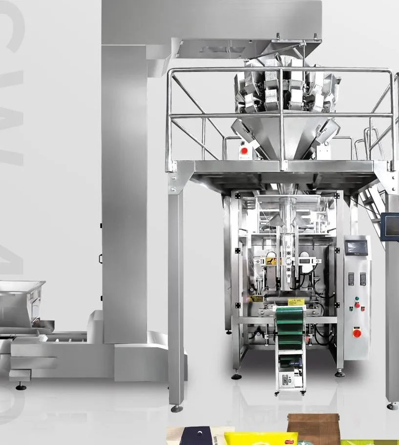
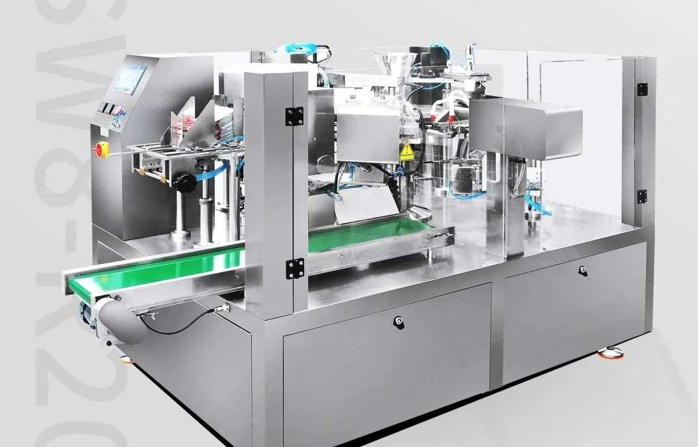
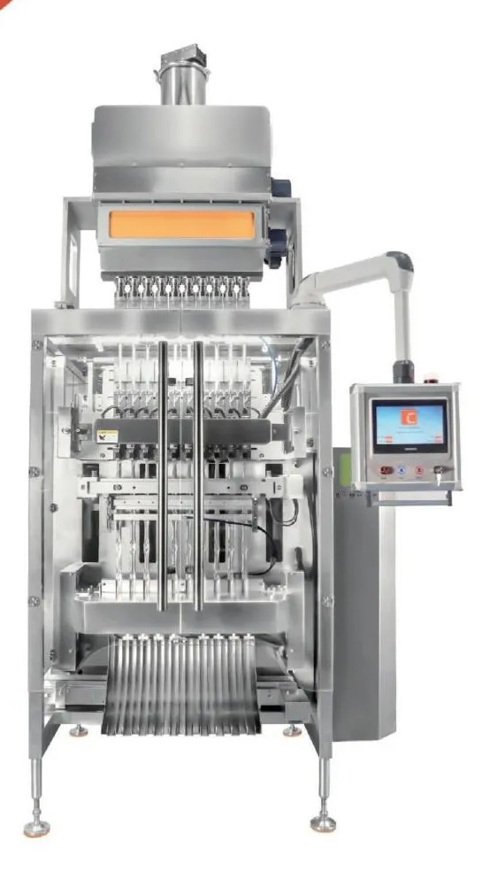

Packing Machine Buying Guides
Practical guides from our engineers on choosing, comparing and running packing machines.

Buying guide
How to Choose the Right Packing Machine: A 5-Step Buyer's Guide
Choose a packing machine by answering five questions in order: what the product is, how much goes in each pack, how many packs per minute, what pack format, and what your site can supply (power, air, space).
Read →
Buying guide
VFFS vs Premade Pouch Packing Machine: Which Should You Buy?
Choose VFFS for the lowest packaging cost and highest speed with pillow or gusset bags; choose a premade-pouch machine when you need zipper, flat-bottom or spout pouches and a premium retail look.
Read →
Buying guide
Multi-Lane Stick Pack & Sachet Machines: Lanes, Speed and Output Explained
Output of a multi-lane machine = number of lanes × 20–40 cuts per minute. Pick the number of lanes from your daily target, then the seal style and dosing system from your product.
Read →